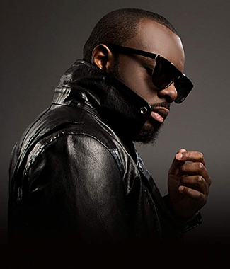

Eric Person

directeur
Né à Bruxelles en 1982, Éric Person a toujours été passionné par la musique — non pas comme artiste, mais comme organisateur, stratège, et visionnaire.
Fils d’un ingénieur du son et d’une professeure de lettres, il grandit entre les studios et les bibliothèques, apprenant très tôt à comprendre aussi bien les sons que les mots.
Or

Dj du groupe
OR, de son vrai nom Oussama Rahim, est né en 1996 à Marseille (France), dans une famille passionnée de musique.
Dès l’enfance, il est fasciné par les sons électroniques, les rythmes afro, et la culture club.
À 14 ans, il commence à mixer sur un petit contrôleur offert par son grand frère — c’est le début d’une grande histoire d’amour avec les platines.